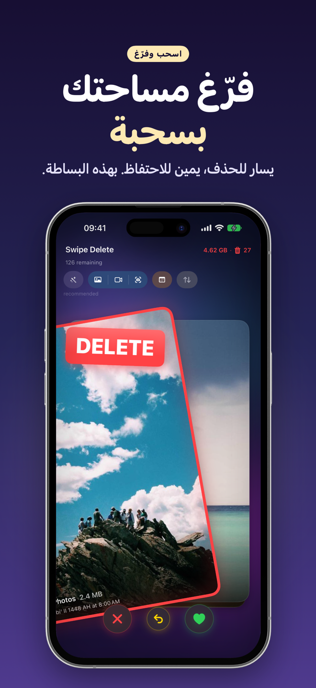
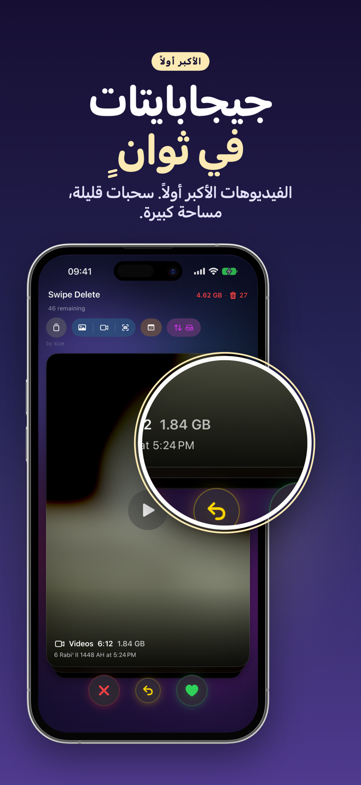
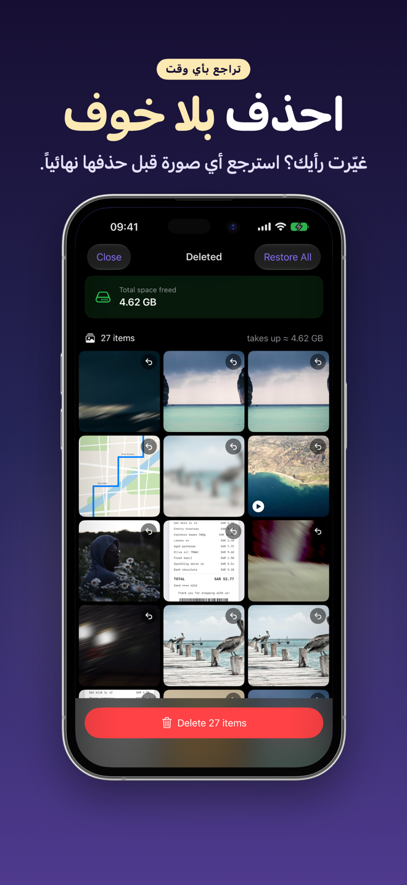
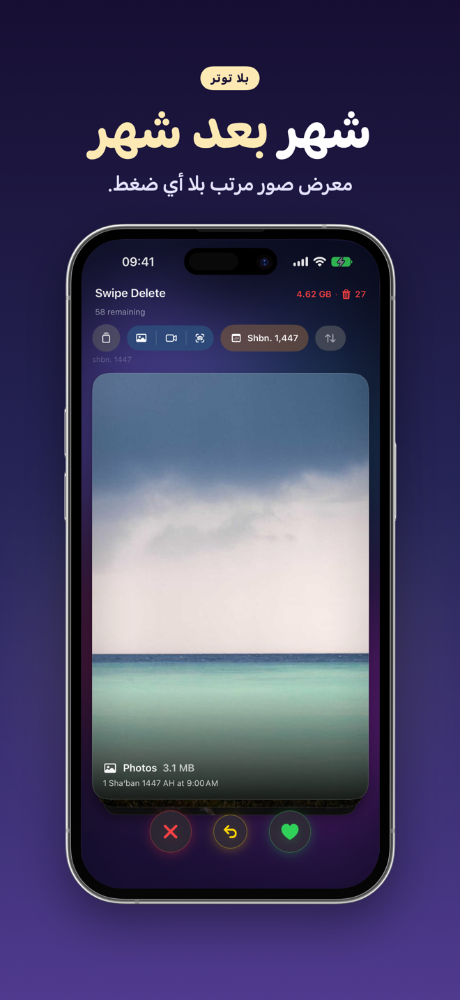
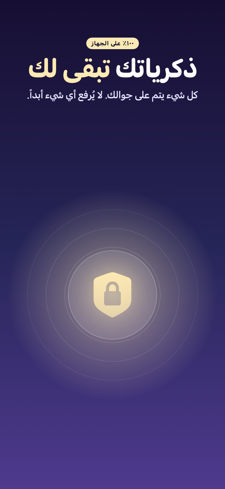
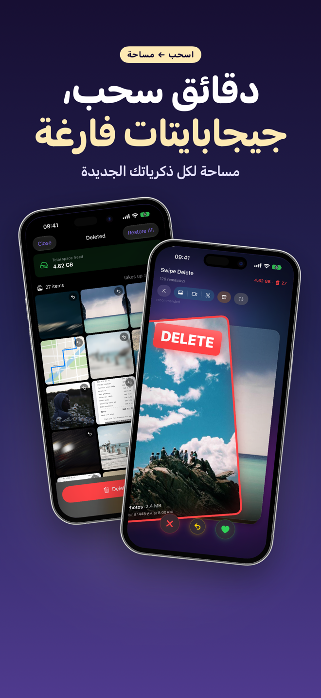
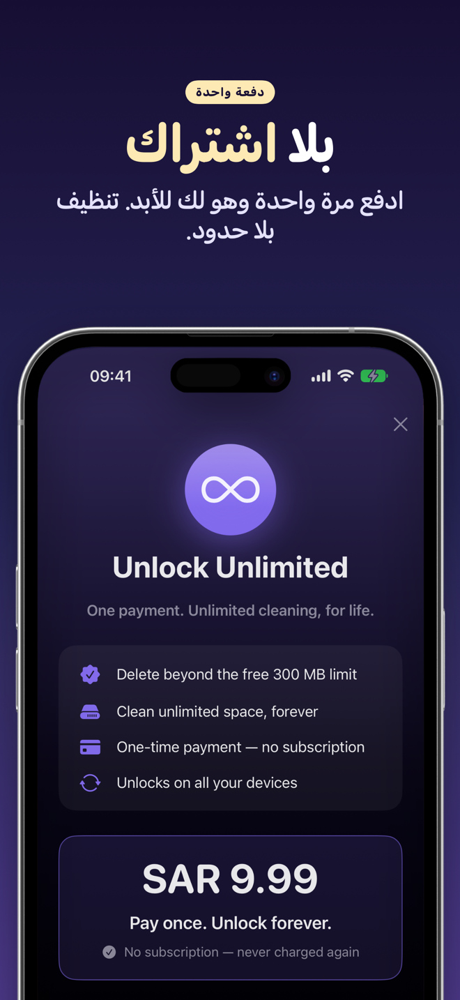

SwipeDelete · تنظيف الصور
امسح الصور بسحبة واحدة وفرّغ مساحة جوالك في دقائق
معرض صورك ممتلئ؟ اسحب يسارًا للحذف، ويمينًا للاحتفاظ. قرار واحد في ثانية، مع اهتزاز لمسي فوري، وزر تراجع متى ما غيّرت رأيك.
قريبًا علىApp Storeكل شيء على جهازك · سلة أمان · دفعة واحدة بدون اشتراك

مساحة جوالك أقرب مما تتخيل
تنظيف المعرض صار سهلًا وممتعًا بدل أن يكون مهمة مملة.
قريبًا علىApp Store- اقتراحات ذكيةلقطات الشاشة والصور المكررة والمتتابعة والضعيفة أولًا.
- مساحة أكبر بأقل جهدرتّب من الأكبر حجمًا.
- أمان مضاعفسلة داخل التطبيق وتأكيد النظام قبل الحذف النهائي.
- خصوصية تامةلا يُرفع أي شيء إلى السحابة.
تنظيف المعرض صار ممتعًا
عدّاد المساحة المحررة يعرض لك كم جيجابايت وفّرت منذ البداية. مرّر لرؤية كل الشاشات ←
يسارًا للحذف، يمينًا للاحتفاظ 
الفيديوهات الأكبر أولًا 
استعد أي صورة 
شهرًا بشهر 
كل شيء على جهازك 
دقائق من السحب 
دفعة واحدة
طريقة العمل
أربع خطوات فقط.
اسمح بالوصول إلى الصور
افتح SwipeDelete واسمح بالوصول إلى مكتبة الصور. التحليل يبقى على جهازك.
اختر من أين تبدأ
الاقتراحات الذكية، أو صفِّ حسب الصور أو الفيديوهات أو لقطات الشاشة، أو السنة والشهر، أو رتّب حسب الحجم.
اسحب
يسارًا للحذف ويمينًا للاحتفاظ. أخطأت؟ تراجع بلمسة.
راجع وأكّد
راجع السلة، واسترجع ما تريد، ثم أكّد الحذف.
أدلة لتفريغ المساحة
أدلة عملية، متاحة حاليًا بالإنجليزية.
كيف تفرّغ مساحة الآيفون
دليل بالإنجليزية.
اقرأ (EN) ←حذف الصور المكررة
دليل بالإنجليزية.
اقرأ (EN) ←حذف لقطات الشاشة
دليل بالإنجليزية.
اقرأ (EN) ←حذف الصور الضبابية
دليل بالإنجليزية.
اقرأ (EN) ←إيجاد الفيديوهات الكبيرة
دليل بالإنجليزية.
اقرأ (EN) ←تنظيف المعرض
دليل بالإنجليزية.
اقرأ (EN) ←حذف صور كثيرة دفعة واحدة
دليل بالإنجليزية.
اقرأ (EN) ←حذف الصور المتتابعة
دليل بالإنجليزية.
اقرأ (EN) ←الأسئلة الشائعة
كيف أمسح صورًا كثيرة بسرعة على الآيفون؟
في SwipeDelete تسحب الصور والفيديوهات كأنها أوراق لعب: يسارًا للحذف ويمينًا للاحتفاظ. قرار واحد في ثانية، مع زر تراجع متى ما غيّرت رأيك. اعرف المزيد (EN)
هل أستطيع استرجاع صورة حذفتها بالغلط؟
نعم. كل ما تسحبه يسارًا ينتقل إلى سلة داخل التطبيق؛ استرجع صورة واحدة أو أفرغ السلة كاملة بلمسة. ولا يُحذف شيء نهائيًا إلا بعد تأكيدك وتأكيد النظام. اعرف المزيد (EN)
كيف أحذف لقطات الشاشة والصور المكررة؟
الاقتراحات الذكية ترفع لقطات الشاشة والصور المكررة أو المتشابهة والصور المتتابعة والصور الضعيفة إلى أول البطاقات، لتبدأ بالأسهل. اعرف المزيد (EN)
كيف أحرر أكبر مساحة بأقل جهد؟
رتّب الملفات من الأكبر حجمًا لتستعيد أكبر مساحة بأقل عدد من السحبات. اعرف المزيد (EN)
هل تُرفع صوري إلى السحابة؟
لا. المعالجة تتم بالكامل على جهازك، ولا يُرفع أي شيء إلى السحابة. سياسة الخصوصية (EN)
هل يوجد اشتراك شهري؟
لا. يمكنك تحرير حتى 300 ميغابايت مجانًا، والاستخدام غير المحدود بدفعة واحدة تشمل أجهزة Apple الخاصة بك. شروط الاستخدام (EN)
ابدأ بأول سحبة
SwipeDelete قريبًا على App Store.
قريبًا علىApp Store